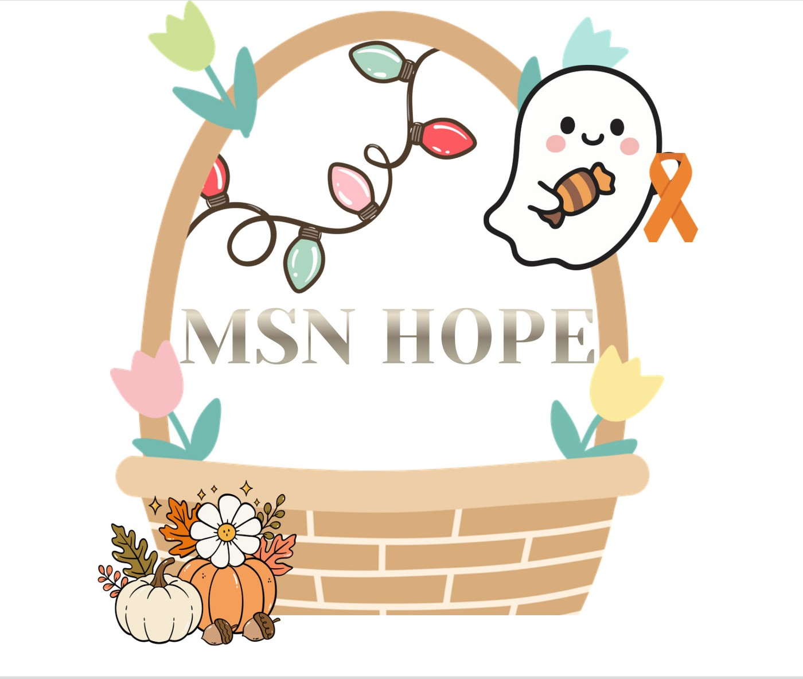
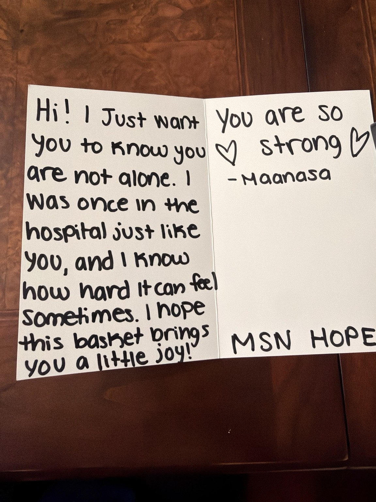
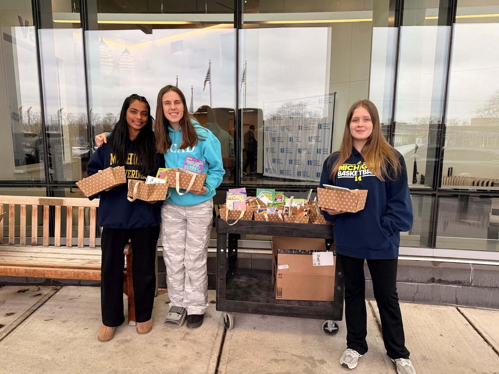
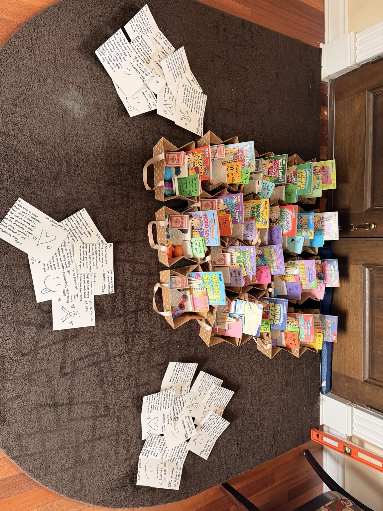

Seasonal Care Packages
Thoughtfully assembled packages filled with activities, comfort items, and festive surprises for pediatric patients.
MSN Hope creates themed care packages, festive gifts, and meaningful moments for children battling blood cancer and other serious illnesses throughout Michigan.


My name is Maanasa Nichanametla, and I founded MSN Hope after battling acute myeloid leukemia at 11 years old.
During treatment, I spent months in the hospital throughout the COVID-19 pandemic, separated from school, friends, family traditions, and many of the everyday moments that make childhood feel normal. Some of the brightest moments came from complete strangers who donated toys, activities, and comforting gifts. Their kindness reminded me that I was not alone.
After recovering, I wanted to create that same feeling for other children. MSN Hope began with one simple purpose: to bring comfort, joy, and celebration directly to children in their hospital rooms.
“I was once in the hospital just like you, and I know how hard it can feel sometimes.”
Holidays are meant to be filled with family, joy, and celebration. For children battling blood cancer, however, these special moments are often spent in a hospital room, away from the comfort and warmth of home.
Through themed care packages, decorations, activities, and festive gifts, MSN Hope works to bring that joy directly to them, because no diagnosis should take away a child’s chance to celebrate.
Every project is designed to restore comfort, connection, and a sense of normal childhood celebration.
Thoughtfully assembled packages filled with activities, comfort items, and festive surprises for pediatric patients.
Personal notes that remind each child they are seen, supported, strong, and never facing treatment alone.
Festive gifts and meaningful details that help children experience the excitement of the season from their rooms.
Since launching, MSN Hope has become an official 501(c)(3), received a Wayne Metro Seeding Grant, completed its first hospital delivery, and begun building the foundation to reach more children and hospitals across Michigan.
Become a community partnerA registered charitable nonprofit positioned for sustainable growth.
Community funding supporting seasonal care projects for pediatric patients.
Working toward more hospital partnerships and a broader volunteer network.


I hope this basket brings you a little joy.
Maanasa, MSN HopeYour contribution helps fund care packages, seasonal gifts, and future hospital deliveries.
Give Through GoFundMeBusinesses, schools, athletic programs, and community groups can sponsor or host a fundraiser with us.
Start a partnershipSupport upcoming care-package projects, community events, outreach, and handwritten-note initiatives.
Volunteer with usWe would love to hear from community members who want to help MSN Hope reach more children and families.